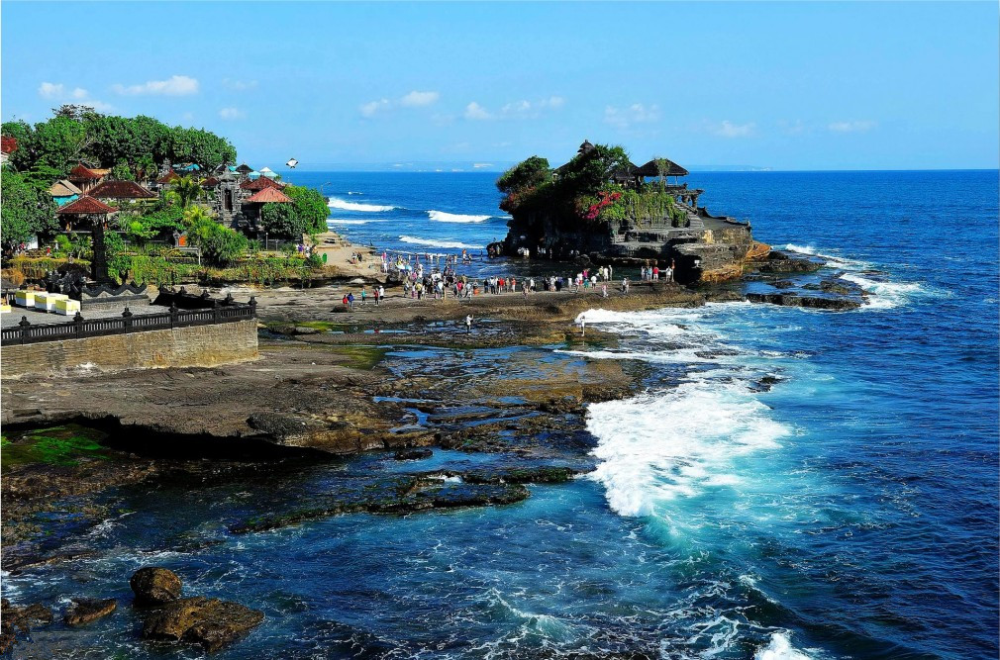

根據菲國電視新聞轉播，一名歐美人士受訪時說：「沙灘很漂亮，海水也乾淨多了。」
另一名外國遊客也說：「沙灘上很寧靜，只有海浪的聲音，我喜歡這樣」。
林姓台商表示，長灘島上的D'mall商場已有8成商店營業，
因封島而暫時離開的居民也回來了，大家相見都興奮地互打招呼。

封島6個月，長灘島的沙灘更為白淨、海水更加清澈，
但這並不是一切水到渠成，特別是針對島上的居民來說。
早在杜特蒂宣布封島之初，長灘島上的居民就已經提出多次陳情，
甚至有數百人在沙灘上靜坐，要求政府慎重考慮，以免影響民眾的生計，
但政府還是說封就封，居民的生活一時之間陷入困頓。
在長灘島開三輪車的麥可在電話訪問中告訴中央社記者，
政府承諾提供就業機會，讓島上居民參與改造工程，但工資卻太低，
說好的生活補助也突然變成必須償還的貸款，
島上的居民只好離鄉，投靠親人或是另謀高就。
至少有兩家台灣人經營的餐廳，就因封島期間店面租金沉重，
加上廚師及員工各奔東西，而忍痛停業；許多接待台灣團的台灣導遊，
也要等明年初台灣直飛長灘島班機復航後，才能回到工作崗位。
菲律賓政府為了追求永續觀光的目標，訂出許多新措施，
包括：沙灘上不得飲食、亂丟垃圾、辦派對、表演火舞，
也不准擺設桌椅和安裝電燈，水上及水下活動暫時禁止，島上不能出現賭場。
此外，島上商家、旅館及渡假村不得為消費者提供「單次性塑膠用品」，
如塑膠袋、礦泉水瓶、拋棄式塑膠杯、塑膠梳、牙刷、塑膠吸管和保麗龍容器等。
杜特蒂政府的鐵腕整治，已讓其他地方的旅遊業者開始自律，
相關部門還考慮以後每年封島一個月，讓環境休養生息。
所有的努力都只是希望長灘島能夠永續經營、長久發光，
但這個目標能否達成，能持續多久，菲國環境部長希瑪圖就說：
「我們已經把長灘島變乾淨了，但要如何維持下去，就要看遊客的素質與態度了。」
下一頁